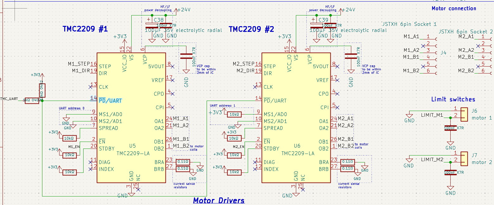
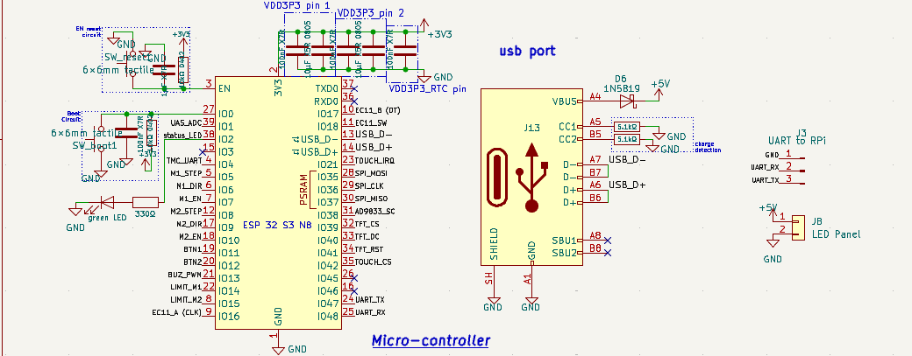

An automated precision preparation and characterisation system for embolisation agents. Engineered to streamline medical workflows by providing inline ultrasonic characterization during Gelfoam slurry comminution, ensuring consistent particle size and distribution.
View on GitHub
Automated comminution (mixing and breakdown) of Gelfoam slurry for precise embolisation agent preparation.
Inline ultrasonic characterization to measure attenuation coefficients and accurately estimate particle size during mixing.
Custom-designed PCB to interface with ultrasonic transducers, manage motor controls, and process high-frequency sensor data.
Reduces human error and variability in manual preparation, ensuring a standardized, repeatable output for medical procedures.

Power distribution from 24v (motor) to 5v (UAS) and 3.3v (Logic)

Ultrasonic Attenuation Spectroscopy

The analog front-end designed to capture high-frequency attenuation data with minimal noise.

The core processing unit layout, highlighting the data lines reserved for external communication.